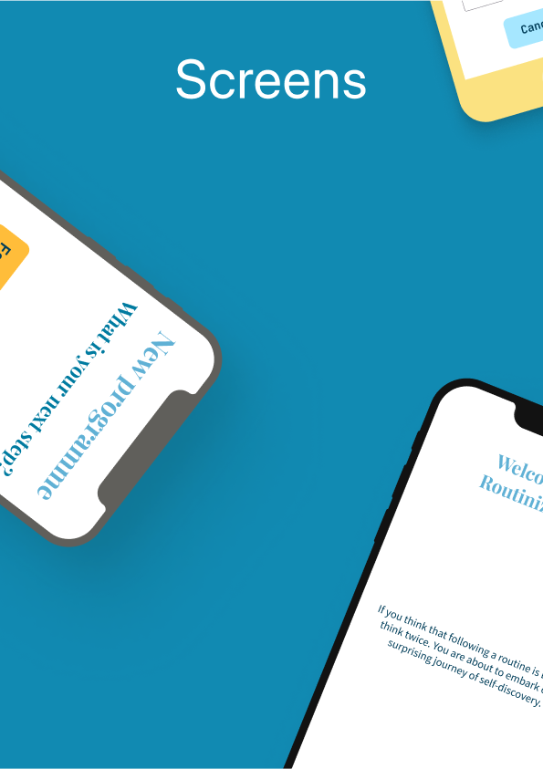

Table of contents
Introduction
In the context of an assignment as part of a BSc in computer science, I had to come up with a React Native application. Specifically, I chose to build an app to help make and break habits through the use of a solid system that’s backed by science, which is presented through a large excerpt that accompanied the end result. It helps people to consistently stick to habits until they become an intrinsic part of their routine. Moreover, it helps to maintain an actual routine and to build a sense of accountability and capability in oneself, because big successes come from small steps taken in the right direction time and time again.
Instead of giving dopaminergic hits like other apps which strive to reward their users in one way or another for completing their tasks and goals or generating anxiety around items not being completed, this app focuses on giving full control to the user with a proven system to turn their habits into automated behaviours with ease. That was the idea, at least.

Concept development
The origin
The idea for this application came from listening to the Huberman Lab podcast from Dr. Andrew Huberman in an episode entitled The science of making & breaking habits. Starting from this excellent learning resource, further literature was devoured to inform the final concept, most notably Psychology of Habit from the Annual Review of Psychology and Intervention to Modify Habits: A Scoping Review published in Sage Journals.
Time restrictions
It was entirely feasible to come up with a simpler concept that would be doable in roughly 10 weeks. Like many popular applications on the market today, it is expected that new features will be added after the official release date once additional and valuable feedback is received from users. The core idea can and will be implemented in this short time frame. After all, this application can pivot towards a simpler presentation should there be a need to and as the Zen of Python says: “Simple is better than complex”. Niceties could be added to the user interface should time allow: however the initial development will focus on a narrower set of features so that the roadmap can be successfully followed and the final product delivered in a timely manner.

Main concern during development
A bad implementation of the system could mean that flexibility could be lost at the cost of ease of development. In other words, due to a strict, looming deadline, some shortcuts could be considered to cut corners in the underlying logic of the application to save time without affecting the quality of the product from the user’s perspective. Nonetheless, this could lead to more headache down the road when it becomes necessary to refactor the application in order to satisfy the need for a more modular approach, which would simplify further development.

Wireframing
Low-fidely as well as high-fidelity wireframes were created using Figma. An exhaustive presentation of the final application was included in an appendix, depicting the logo, the color palette, the typography used, a list of the UI elements and a complete and faithful display of all the screens. Technically, the high-fidelity wireframes were designed using Figma components and placed inside “frames” to export a PDF. Most UI elements were hand-drawn, except for a few free icons taken from the Material Design community. Numerous user flow diagrams were included to illustrate how the wireframing took shape once the logic to navigate between screens was determined.
User feedback
User feedback was critical to the success of this project. Users helped refine certain visual aspects, such as making sure there was enough padding between the different elements by testing with devices using a smaller screen.
Improvements to the original design
Other notable improvements included redesigning the user flow when creating a new programme so that it would be easier to follow. Instead of dealing with multiple habits at once, the slightly updated design made it possible to fully complete the cycle when adding a new habit. Similarly, once habits were added, the newer flow to tackle habit stacks made it simpler to navigate back to the main screen to confirm the selection of habits and to review the programme as a whole.
Without users inquiring about having a satellite view in the map, there wouldn’t have been any option to toggle the style of the map either. This became a needed addition in places where roads are sparse while the terrain remains easily recognizable.

Prototyping
Early iterations
While shaping the initial application alongside both wireframing and concept sketching, a few iterations of the different screens were designed from scratch. General ideas and concepts were discussed and analyzed to fit with the goal of creating a mindful habit tracker while taking into consideration hard requirements such as the time available for the development cycles.
The application started with a strong focus on accountability. However, it was quickly realized that the technical stack would need to be more ample and would necessarily require a higher budget to fund the use of online services to store a database of “habit contracts” that users would create and optionally make public on their own. Needless to say, the single developer involved in the creation of this application did not have the resources nor the willingness to deal with legal issues that would arise from managing such personal information.

Privacy concerns
Additionally, there would not have been the easy possibility of making accessible all the data from a habit contract since personally identifiable information such as location, accountability partner names and so on would be revealed to the world. For these reasons and many more, the set of features relating to accountability was removed from the application to ensure that user privacy would be dealt with properly at this scale of operation.
In this regard, to avoid any potential issue with privacy, no data whatsoever is stored remotely. React Native Async Storage was used to store data locally on users’ devices, even removing the need for an internet connection (except for the need to find the user location and set an address, which is an optional step when creating a programme).
To make use of the async storage, Redux Toolkit was used to deal with all the state management and is responsible for dispatching actions throughout the application. Importantly, users do not need to leave the application open at all times since Redux Persist was used to store Redux data to the async storage and to rehydrate it when the application is re-opened.
Development
As we can now attest, a lot happened before developing the actual application, but this fact did not make the development itself less interesting to narrate! In a little over two months, this React Native application started from nothing and grew to a fully-fledged product.
Initial setup
The initial steps taken were all about setting up the project correctly with most of its JavaScript dependencies, beginning with a .gitignore file to prevent adding secrets and other unneeded artifacts to the project, an app.json to define the metadata required to publish an application with Expo and a package.json listing all the major dependencies to be installed with Yarn in this case. Secondly, Reactotron was set up with Redux to provide access to the application state in real time. Strict mode was then enabled to help avoid bad programming practices and third-party libraries were silenced with React Native’s LogBox module.

State management
Once the basic setup was in place, Redux Persist was added to work with React Native Async Storage. Then, the testing setup was integrated into the project before adding any screen to the application using Jest configured with mockAsyncStorage to avoid issues with the persistent storage while testing. Despite barebone Redux being useful on its own, Redux Toolkit provides some useful utilities and shortcuts that were taken advantage of, including createSlice to easily “slice” parts of the state to retrieve and store information in isolation, combineReducers to list all the slices of state in the same “root reducer”, and configureStore to connect the persistent storage to the Redux store and set up access to the store itself in the rest of the application.

Styling the app
Before adding logic to the project, react-native-extended-stylesheet was used to add functionality to the way the styling could be done by having the ability to reference variables, do calculations inside CSS fragments, etc. Styles were set globally right from the start to avoid code duplication and where deemed useful, some screens had specific stylings applied exclusively to them from separate files.
As a next step, the general structure of the app was set up with a status bar and a SafeAreaView component to make sure that rendering happened within safe limits on the screen. In order to style the application and render different screens, React Navigation was used to make the navigation possible and to initially render a fixed screen at a time while it was being designed based off the high-fidelity wireframes. One by one, the screens were designed with all the buttons in the right place and some dummy content to render all the different UI elements. This led to using a multitude of third-party libraries, including notably react-native-maps to work with native maps on both Android and iOS devices.
Premature refactoring
With the screens in place, the code was re-arranged to allow for better flexibility while developing. New directories for components were created, and the smallest components of all were extracted from the larger ones to start splitting concerns and have specific destinations to receive parts of the states via Redux selectors.
Global styles were then cleaned up considerably and local styles were mostly eliminated as they were being re-used elsewhere without notice. At this point, without yet having anything useful to demonstrate, users reviewed where the application was going and suggested possible improvements while it was still easy to move UI elements around without breaking anything.

Adding navigation
Once all the screens were designed and ready to include programmatic logic, the screens were then linked together so that the user could —without doing anything useful yet— navigate from one page to another. After that, a menu was included in the top-left corner to navigate to specific pages from anywhere within the app. This behaviour was later customized so that some pages would show the “back button” (a chevron icon pointing to the left) to make going back to the previous screen easier than scrolling to the bottom of a longer page. On top of this, some screens received a special treatment where the menu is hidden entirely, such as when deleting a programme from the app. While not strictly required, this made it obvious to the user that they should focus on the content of that particular screen.

Customizing UI elements
At this stage, the application was ready to receive its final touch-ups to look as polished as the expected product. This included getting our hands on React Native Bouncy Checkbox to give a more joyful feel to the most boring parts of the application and using React Native DateTimePicker to input the time of the day in a more meaningful and straightforward way.

Setting up simple states
Using the useState hook from React and useDispatch from Redux, basic states were set up to toggle the styles of buttons and to allow basic interactivity, such as expanding and collapsing sections of the user interface. Using some dummy content in the Redux store, other simple events were taken care of, for example removing a habit, creating a new habit and so on. With the basic logic and states in place, more complex flows were added, such as the need to loop through habits to display them as “habit stacks” or looping through the days in a programme to display three phases for each day, each phase containing possibly multiple stacks of habits and each habit being a self-contained source of data with a table displayed with react-native-tableview-simple.

Testing on different platforms
Although admittedly a bit late in the process, the application was then tested fully on Android and in the Expo website. Trading off speed of development for the inconvenience of guaranteeing a pixel-perfect application at each step was most definitely worth it since very few changes were required in the end, this being the main idea behind using something like React Native in the first place so that code can be written once and for all. Despite all these promises, some issues related to dependencies were faced with big, red messages showing an alarmingly large list of errors in the Expo Snack interface. Thankfully, it was only a matter of upgrading locally to match the latest SDK available at the time from Expo (v46.0.0).
There were some minor issues observed on different platforms which were fixed on the development machine using simulators. For instance, the map view was somewhat laggy on iOS originally, so instead of moving the marker around on the map, it was decided to leave it fix on top of the center of the map with a greater zIndex to make it visible at all times in order to have only the map view to re-render each time the map was moved. On Android, the time picker was a bit fiddly to work with and so to circumvent the problematic situation, the picker would be shown once automatically to the user when the related screen was opened, removing the need to display a space for the picker on screen and instead having it fill out the screen in the style of a modal.

Improving the developer experience with Redux
Reactotron was useful in the beginning but started to crash very often at this point of the development. After un-starring the project on GitHub and starring React Native Debugger instead, things were smooth again. Reactotron required messing a little bit with the testing setup by removing everything related to it first, then React Native Debugger made it all simple again thanks to its seamless integration with Redux which does not need to be injected as middleware when configuring the Redux store.
Refactoring again
Now that most of the logic was implemented, smaller components were created from the monstrous ones created thus far. In most instances, components were already existing on their own but they were all positioned in the same file without being prefixed with the keyword export. Equally important, all ESLint warnings were cleared up one after the other to avoid re-renders and unused bits of code. Because Expo tends to be picky with missing import statements, import React from ‘react' was carefully added to almost every file in the project where it was needed.
Last-minute cleanup
Finally, once the application was usable and the source code a little more pretty, import statements were grouped by categories, warnings from third-party libraries were silenced with LogBox, spacing around paragraphs was reviewed and optimized and the app was scrutinized once again to look for the presence of bugs.
Unit testing
Navigating
While the development took place, testing happened all along. The first couple of tests to be included in the test suite were added while validating that navigation occurred correctly between screens. At once, tests were also added when creating the screens to make sure that they would render consistently in the UI by creating snapshots with Jest.
Utility functions
More concrete unit testing happened with the utility functions being called by the actions from the Redux store. Because these functions define what happens when an action is dispatched with Redux, there is a lot of potential for bugs to creep in. To make debugging less painful in these cases, dummy and minimal states were set up as part of the unit tests to check for inconsistencies against the input value and the expected one. While Jest offers a complete range of features, the matchers used most often from this library were toBe to check for exact values (e.g., Boolean and numbers) and toEqual to assert a deep equality on objects and arrays. Mock functions were set up with Reactotron, but that need went away when the developer migrated to a more stable piece of software (i.e, React Native Debugger).

Database & asynchronous code
In the future, should this application be deployed to the cloud, there will be a need to use setup and teardown functionality against a database and to add tests for asynchronous calls. This was not required for the present version of the application, which focuses on allowing users to be as independent as possible from the Internet while respecting their privacy.

Evaluation
Overview
All in all, despite a strict deadline and few (more truthfully, close to none) monetary resources, it was possible to deliver a working solution to a tangible problem, namely that of increasing productivity by knowing what is most valued in one’s life circumstances. While the application can be considered feature-complete, it could be the beginning of a long journey towards sharing an application that has real potential to improve people’s lives by solving a problem that is hard to pinpoint without enough awareness.

Technical aspects
On the technical side of things, it would have been preferable to split the state in a more logical way right from the beginning. Even though a general idea of the state was drawn inside an IDE by creating a JSON object to represent the schema to be adhered to, the state was allowed to mutate along the way, which caused issues by having to move reducers around and by having to update the selectors to look at a different hierarchy of the state. By contemplating the real meaning of a Redux “slice” in which the state is meant to be entirely independent from other slices of the state, it makes it obvious that some types of object will remain independent while others will eventually require to communicate with their siblings. Thinking this logic through before starting to make things happen in the UI is, in hindsight, a fruitful endeavour.
Communicational aspects
On the soft skills side, a mistake was made by not sharing the original concept with users sooner. Although the final product would likely resemble what it ended up being, interactivity in the application could have been designed better regarding some aspects. For example, the component responsible for displaying the frequency of execution could very well become an actual calendar. Designed in a compact way, a calendar surely would be more familiar to most users instead of having a list that needs to be scrolled into view. Functionally speaking, ticking a box in a calendar-like view would be exactly equivalent to checking off a box next to a row item in a list, but the presentation would be more familiar to most users and, quite understandably, more intuitive too.
Demo of the app
Resources and references
- Annual Reviews, Psychology of Habit
- ESLint, Find and fix problems in your JavaScript code
- Expo, Make any app. Run it everywhere
- Figma, Guide to components in Figma
- Figma, Nothing great is made alone
- Huberman Lab, THE SCIENCE OF MAKING & BREAKING HABITS
- Jest, Delightful JavaScript Testing Framework with a focus on simplicity
- Material Design, Create intuitive and beautiful products with Material Design
- React Native Async Storage, An asynchronous, persistent, key-value storage system for React Native
- React Native Bouncy Checkbox - Fully customizable animated bouncy checkbox for React Native
- React Native DateTimePicker - React Native date & time picker com- ponent for iOS, Android and Windows
- React Native Debugger - The standalone app based on official debugger of React Native, and includes React Inspector / Redux DevTools
- React Navigation - Routing and navigation for Expo and React Native apps
- react-native-extended-stylesheet - Extended StyleSheets for React Native
- react-native-maps - React Native Mapview component for iOS + Android
- react-native-tableview-simple - Flexible and lightweight React Native component for UITableView made with pure CSS
- Reactotron - A desktop app for inspecting your React JS and React Native projects. macOS, Linux, and Windows
- Redux Persist, Persist and rehydrate a redux store
- Redux Toolkit, Redux Toolkit Quick Start
- Redux Toolkit, The official, opinionated, batteries-included toolset for efficient Redux development
- Sage Journals, Intervention to Modify Habits: A Scoping Review
- Wikipedia, Zen of Python
- Yarn, Safe, stable, reproducible projects